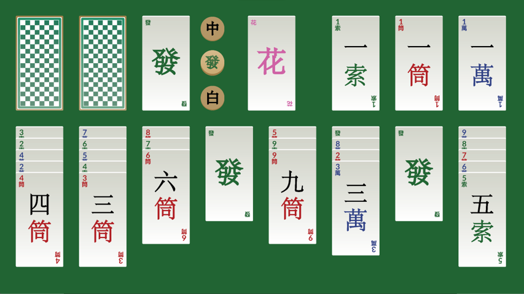

Shenzhen Solitaire is a solitaire variant created for the game Shenzhen I/O, by Zachtronics.
I prefer it to Klondike solitiare (the "normal" version), mainly due to the larger number of
winnable deals (
99%!). It also just feels like it has more sustenance, instead of being driven
only by randomness. So, I thought it would be worth trying to create it from scratch.
I made my version using SDL2 and C++, with Adobe Illustrator for the graphics. I think it turned out well
(although I do have to clean it up a little bit). If you enjoyed it, you should check out
the original and support
the devs!
